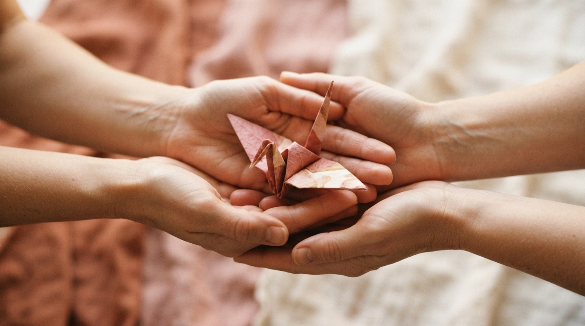
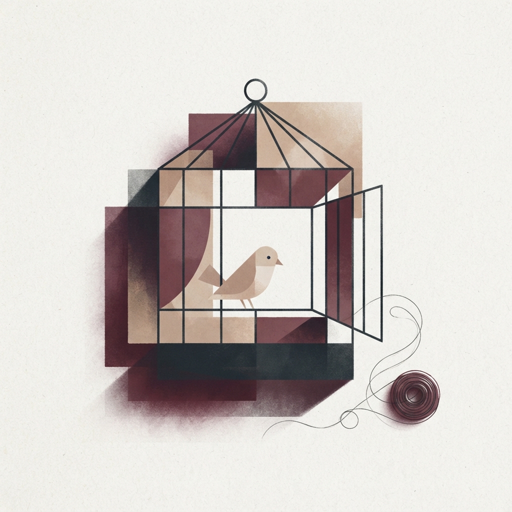

A violência nem sempre começa com um tapa.
Muitas vezes, ela se inicia de forma sutil, através do controle, do medo e do isolamento. Entender como essas dinâmicas funcionam é o primeiro passo para romper esse ciclo e resgatar sua autonomia.

O Ciclo da Violência
A violência doméstica raramente é um evento isolado. Ela costuma seguir um padrão repetitivo que aprisiona a vítima, composto por três fases principais. Reconhecer esse padrão é essencial para quebrá-lo.
Aumento da Tensão
O agressor mostra irritação por coisas pequenas, tem acessos de raiva e humilha a vítima. A mulher tenta acalmá-lo e evitar conflitos, sentindo que está "pisando em ovos" o tempo todo.
Ato de Violência
A tensão acumulada culmina na agressão, que pode ser física, verbal, psicológica, moral ou patrimonial. É o momento de maior risco, medo e desespero para a vítima.
Lua de Mel
O agressor se arrepende, pede desculpas e promete mudar. Ele se torna carinhoso e atencioso, fazendo a mulher acreditar que a violência não voltará a acontecer, até que a tensão recomece.
Entender é o primeiro passo.
A violência contra a mulher não se resume à agressão física. Ela assume diversas formas, muitas vezes normalizadas pela sociedade. Reconhecer cada uma delas é fundamental.
Física
Qualquer conduta que ofenda a integridade ou saúde corporal.
Psicológica
Dano emocional, controle de crenças e decisões, chantagem ou humilhação.
Sexual
Forçar, induzir ou presenciar relação não desejada mediante coação.
Moral
Calúnia, difamação ou injúria contra a mulher.
Patrimonial
Retenção, subtração ou destruição de bens, documentos ou recursos.

Nem toda violência deixa marcas visíveis.
A violência psicológica é muitas vezes a porta de entrada para outras formas de abuso. Ela corrói a autoestima e cria dependência emocional.
- Humilhação: Críticas constantes sobre sua aparência ou inteligência.
- Manipulação (Gaslighting): Fazer você duvidar da sua própria memória e sanidade.
- Isolamento: Afastar você propositalmente de amigos e familiares.
"Uma violência também pode ser silenciosa."
Você não precisa enfrentar isso sozinha.
Existem redes de apoio prontas para te acolher e orientar, com sigilo e segurança.
Ligue 180
Central de Atendimento à Mulher. Gratuito, confidencial e funciona 24 horas por dia, todos os dias.
Ligue 190
Polícia Militar. Em caso de emergência ou risco imediato de agressão.
Ligue 188
CVV - Centro de Valorização da Vida. Apoio emocional e prevenção do suicídio, gratuito e sigiloso, 24 horas por dia.